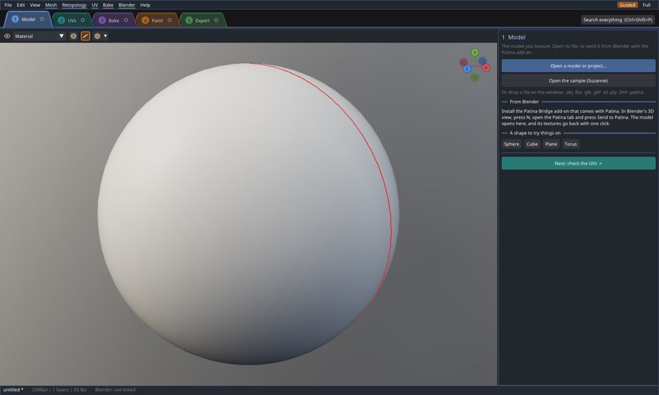
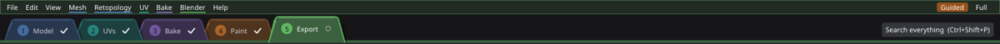
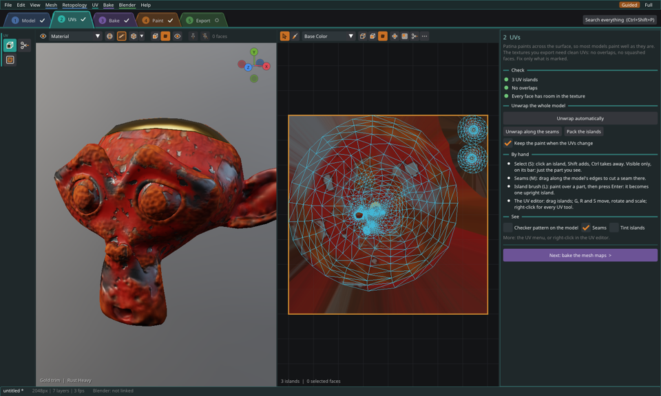
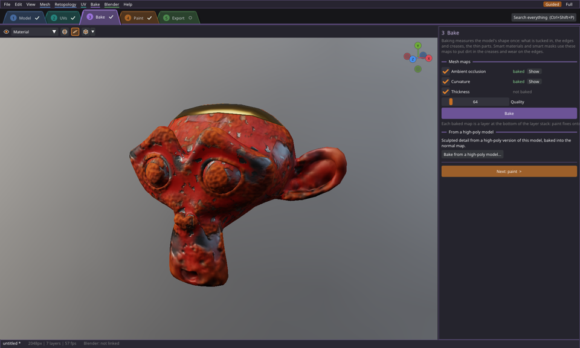
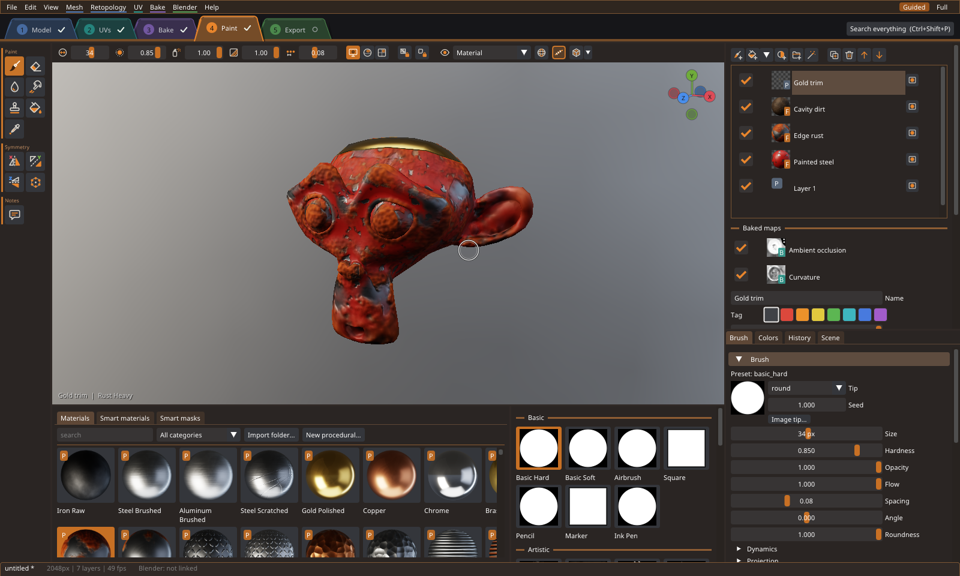
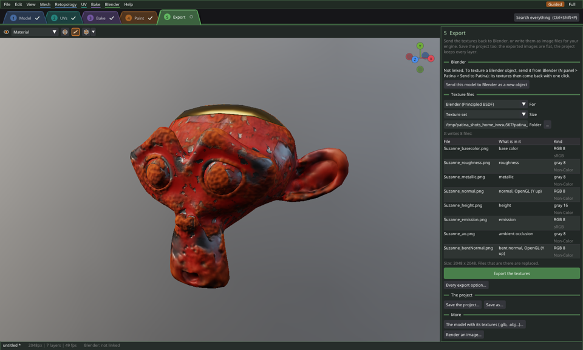
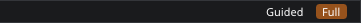

The Guided layout: your first texture
The Guided layout splits the work into five steps along the top: Model, UVs, Bake, Paint and Export. Each step is a screen with what that step needs and nothing else. A new Patina starts in it. The Full layout shows every panel at once, docked the way you arrange it. Switch between them at any time with Guided and Full at the right of the menu bar. Both work on the same project with the same tools, so nothing is lost when you switch.

The step bar

The steps are folder tabs, each in a color of its own: Model blue, UVs teal, Bake violet, Paint copper and Export green. Click a tab to go to that step. It comes to the front, a little higher than the others and joined to the strip under them, and the whole window takes on a tint of its color, so you can tell at a glance which step you are in. The steps are in the order the work usually goes, but you can jump between them in any order. The same colors mark the tools, panels and menus of each step in the Full layout.
The mark beside each step's name shows where it stands:
| Mark | Means |
|---|---|
| Check mark | Done: a model is open, the UVs are clean, the maps are baked, something is painted, the textures are exported. |
| Amber warning sign | Needs a look: overlapping UVs, faces with no UV area, a bake older than the UVs, a partial bake. Rest the pointer on the step to see why. |
| Empty circle | Not done yet. |
The button at the bottom of each step names the next one (Next: bake the mesh maps) and has that step's color. Search everything at the right of the bar finds any action, panel, material, brush, layer or file by name. It also finds the things the Full layout has and a step leaves out. Its keys are Ctrl+Shift+P and F3 (F3 and Ctrl+K in the Blender keymap).
1. Model
With nothing open, the Model step offers a file to open, the sample (Suzanne), a shape to try things on, and your recent files. You can also drop a file anywhere on the window. To texture a Blender object, send it from Blender with the Patina Bridge add-on (N panel › Patina › Send to Patina; see Blender).
With a model open, the step shows what it is made of and what the mesh check found wrong with it (holes, flipped faces, open seams...). Show them on the model marks the problems, and Fix everything that can be fixed mends them; your paint moves with the faces. Textures sets the texture size and how the model's faces share textures: one texture, one per Blender material slot, or UDIM tiles. More mesh tools has the size and origin, polygon reduction, lightmap UVs and collision shapes. Retopology has tools and a panel of its own, so it opens in the Full layout.
In the Model, Bake and Export steps the 3D view is for looking at the model. A left drag turns it, Shift moves it and Ctrl zooms, and no tool acts. Your usual navigation keys work too.
2. UVs

Patina paints across the surface, so most models paint well whatever their UVs. The textures you export do need clean UVs, though. The step checks them for you and marks only what needs fixing:
- Overlapping islands: paint shows twice there. Fix moves them apart.
- Faces with no UV area: they get no paint. Unwrap them gives them UVs of their own.
- No UVs at all: unwrap the model.
Unwrap automatically cuts the model where it bends sharply, which suits hard-surface models. Unwrap along the seams flattens the pieces your seams cut out, which suits characters and cloth. Both work on the selected faces, or on the whole model when nothing is selected. Pack the islands arranges them to fill the texture. With Keep the paint when the UVs change on, the paint moves to the new UVs.
The tool strip has the UV tools: Select (with Visible only), Seams and the Island brush. The UV editor beside the view works as described in UV editing. Its right-click menu and the UV menu have every UV tool. Checker pattern on the model shows stretch: squares that stay square mean good UVs.
3. Bake

Baking measures the model's shape once. Ambient occlusion is what is tucked in, curvature is the edges and creases, and thickness is the thin parts. Smart materials and smart masks use these maps to put dirt in the creases and wear on the edges. Tick the maps you want and press Bake. Quality sets how smooth the ambient occlusion is; 64 is good. Show puts a map on the model. When the UVs change after a bake, the step says the maps are out of date and Bake again brings them up to date. Each baked map is a layer at the bottom of the layer stack, where you can paint fixes onto it. To bake sculpted detail into the normal map, use Bake from a high-poly model. If you painted a high-poly model, Bake down to a low-poly model moves every layer onto its low-poly version (see Baking down).
4. Paint

This is where the texturing happens. The layers are at the right, and the library shelf is under the view: materials, smart materials and smart masks, with the brushes beside them. The tool strip has the paint tools and symmetry. While nothing is painted, a note at the top says where to start: drag a smart material from the shelf onto the model, or paint with the brush (B). On a new Patina the brush paints a red color; pick another in Colors, or a material from the shelf.
Under the layers are four tabs. Brush has the brush and the paint material, Colors the color picker and swatches, and History every undo step. Scene has the base material under every layer and the lighting. All of it works as the rest of this manual describes: Painting, Materials, Layers.
5. Export

For a model from Blender, Send the textures to Blender sends the textures back to the object, with its UV edits. Send them after every change keeps Blender up to date as you paint. To write image files instead, choose what they are for, their size and the folder, then press Export the textures. The preset sets which maps are written and how they are packed: Blender, glTF, Unreal (ORM and DirectX normals) or Unity (MaskMap). Above the button, the step lists every file it will write: its name, what its channels hold (R occlusion, G roughness, B metallic), its bits, and whether it is a color map (sRGB) or a data map (Non-Color, as Blender's image nodes call it). Files with the same name are replaced. Every export option opens the full Export Textures window. It has the file names, layered PSD files, and one layer or its mask. Save the project too: the exported images are flat, and only the project keeps every layer.
First start
The first time Patina starts, the welcome window asks three things. You come from picks the keys and the way the view turns: Blender (the middle button orbits, F3 searches), Maya (Alt with the left, middle and right buttons), or something else (Patina's own keys, Alt or the middle button). Your textures go to picks the export preset. Layout picks Guided or Full. All three can be changed later: the keys in Edit › Preferences, the layout at the right of the menu bar. In the Guided layout the welcome window appears only that first time, because the Model step does its job from then on. Help › Welcome Window brings it back.
The Full layout

The Full layout shows every panel at once and keeps the arrangement you give it. It is the layout to work in once you know your way around, or when you want two things side by side that the steps keep apart. An existing Patina keeps the layout it had: a Patina used before 0.46 opens in the Full layout. See The interface.
Unsaved work
Patina asks before anything replaces a project with unsaved changes: File › New, Open, Open Recent, the autosave, the sample, the welcome window's buttons and a dropped file. Save saves first. For a project that was never saved, it asks where to save and then goes on. Don't save drops the changes, and Cancel keeps working.
For agents
The layout command reports the layout and each step's state (done, look,
todo, and why), and switches the layout (mode) or the step (step). It works only
with the window open. The Guided layout feature switch (Edit › Preferences › Features) turns the whole thing
off.